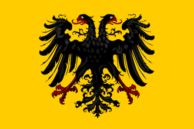
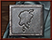

| 伊比利亚 |
| 法兰西 |
| 低地 |
| 不列颠 |
| 北欧及波罗的 |
| 中欧 |
| 北德意志 |
| 南德意志 |
| 意大利 | 萨伏依 |
| 巴尔干及安纳托利亚 |
| 东欧 |
|  | |
|---|---|
| 神圣罗马帝国 | |
| 政府等级 | |
| 主流文化 | |
| 首都 | |
| 政体 | 神圣帝国君主制 |
| 国教 | |
| 科技组 | |
| 神圣罗马帝国的理念 |
此信息可能已落后版本，最后更新于1.35 ----
|
| +2 外交声誉 +1 可行的政策 |
| +5% 行政效率
|
|
|
神圣罗马帝国（英文：Holy Roman Empire）是游戏中一个独一无二的政治结构，由德意志区域及意大利半岛北部众多大小各异的国家组成。其成员国可视作“诸侯国”，各国统治者则为“诸侯”。其中七位诸侯有权在上任帝国皇帝死后选举出下任皇帝，这七位诸侯被称为“选帝侯”。神圣罗马帝国皇帝拥有许多权力，同时也要担起不小的责任，他不仅要保护帝国疆界，还要维护宗教信仰和文化传统。
历史上，神圣罗马帝国从10世纪末建立开始，一直存续到19世纪初，最多时同时有300多个诸侯。查理大帝作为法兰克国王，于公元800年在罗马由教宗加冕为“罗马人的皇帝”，而他的帝国后来被他的子孙们于843年瓜分。直到962年，东法兰克王国的奥托一世再次被加冕为“罗马皇帝”，并宣告神圣罗马帝国的建立。直到  施瓦本的霍亨斯陶芬王朝的腓特烈一世（“巴巴罗萨”，1155-1190年在位）时期，这个帝国始被称为“神圣罗马帝国”，此前它的称呼一直是“罗马帝国”。神圣罗马帝国一直认为自己是
施瓦本的霍亨斯陶芬王朝的腓特烈一世（“巴巴罗萨”，1155-1190年在位）时期，这个帝国始被称为“神圣罗马帝国”，此前它的称呼一直是“罗马帝国”。神圣罗马帝国一直认为自己是  罗马帝国的继承者，尽管其从未直接将
罗马帝国的继承者，尽管其从未直接将  教宗国及其治下的
教宗国及其治下的 拜占庭还在苟延残喘，同时，直到1479年之前，还有多个拜占庭继承国存在，如
拜占庭还在苟延残喘，同时，直到1479年之前，还有多个拜占庭继承国存在，如  特拉比松等。在中世纪末期，帝国经历了大量的权力下放，这可以在游戏内特殊的帝国系统中看出。诸侯、选帝侯和皇帝之间的权力斗争永无止息，本就薄弱的帝国统一性更是在宗教改革中消耗殆尽；但帝国一直是欧洲政治中不可忽视的一个特殊架构。
特拉比松等。在中世纪末期，帝国经历了大量的权力下放，这可以在游戏内特殊的帝国系统中看出。诸侯、选帝侯和皇帝之间的权力斗争永无止息，本就薄弱的帝国统一性更是在宗教改革中消耗殆尽；但帝国一直是欧洲政治中不可忽视的一个特殊架构。
自15世纪中期，也就是1444年游戏开始前后起，帝国皇帝的头衔几乎一直被  奥地利的统治家族——哈布斯堡王朝，及后继的哈布斯堡-洛林王朝所掌控，仅在1742-1745年间短暂地落于
奥地利的统治家族——哈布斯堡王朝，及后继的哈布斯堡-洛林王朝所掌控，仅在1742-1745年间短暂地落于  巴伐利亚的维特尔斯巴赫王朝手中。最终，在1806年，在拿破仑的威逼下，帝国皇帝弗朗茨二世[2]宣布放弃皇帝尊号、终结对帝国诸侯名义上的宗主权，神圣罗马帝国从此宣告解体。
巴伐利亚的维特尔斯巴赫王朝手中。最终，在1806年，在拿破仑的威逼下，帝国皇帝弗朗茨二世[2]宣布放弃皇帝尊号、终结对帝国诸侯名义上的宗主权，神圣罗马帝国从此宣告解体。
本页面主要介绍名为  神圣罗马帝国的特殊游戏机制的相关内容。帝国皇帝可以通过帝国改革将帝国整合为单一的同名国家——
神圣罗马帝国的特殊游戏机制的相关内容。帝国皇帝可以通过帝国改革将帝国整合为单一的同名国家——  神圣罗马帝国（tag代码为
神圣罗马帝国（tag代码为HLR）。清注意区分这两个概念的不同之处。本页面中列出的国家信息框和  国家理念是国家
国家理念是国家  神圣罗马帝国的相关信息。
神圣罗马帝国的相关信息。
在中文玩家圈中，神圣罗马帝国经常被简称为“神罗”。
神圣罗马帝国界面的入口是游戏界面底部（只会在帝国存在且在玩家视野范围内时出现）的一个以帝国的双头鹰环绕的小盾牌。图标下方显示的数字代表现任皇帝当前的帝国权威。
该界面中，众多大大小小的盾牌图标代表了神圣罗马帝国的各诸侯国， 点击任一盾牌可以打开对应国家的外交界面，让你可以检视该国并与之进行外交互动。
皇帝是神圣罗马帝国的领袖，有着保护和维持成员国主权的责任。帝国皇帝的政府等级固定为  帝国级。
帝国级。
 奥地利大公
奥地利大公
皇帝一旦被选举后将担任终身。在现任皇帝死后或者不具备作为皇帝的资质后，选帝侯们会从基督教世界中重新选出一个皇帝。现任皇帝不再满足资格或者被吞并时，帝国内也将会选出一个新的皇帝。符合成为皇帝资质的宗教在游戏开始时是  天主教，而在宗教联盟产生结果后则由战争结果决定。
天主教，而在宗教联盟产生结果后则由战争结果决定。
成为皇帝需要满足的条件有如下：
如果没有符合条件的皇帝候选人（一般是因为所有符合宗教战争结果宗教的国家都是女性君主），神圣罗马帝国将会自动解散，尽管这种情况在游戏中很难自然发生。
请注意，被选举的帝国皇帝并不一定要是帝国的成员，即选帝侯也可以为帝国以外符合条件的国家投票，但一般AI选帝侯会更愿意选举帝国成员为新皇帝。
选举的结果是瞬间产生的，得到最多票数的候选人将成为皇帝。在神圣罗马帝国界面可以查看各选帝侯在当前皇帝死后将如何投票选举下一任皇帝。如果现任皇帝的继承人与其他候选人的票数持平，那么仍由其继承人继任下届皇帝；如果最高票数持平的候选人中没有现任皇帝的继承人，那么  威望最高的候选人将成为皇帝。
威望最高的候选人将成为皇帝。
现任皇帝如果在宗教战争中途去世，则其继承人自动继承皇位。
值得注意的是，当宗教联盟战争结果决出  新教或为帝国的官方信仰时，前任皇帝作为天主教国家显然不再符合条件。那么剩余的选帝侯（这种情况下只有信仰新教或改革宗的选帝侯在宗教战争后能依然保有选帝侯席位）也会选出一位新的、符合条件的新教君主作为新任皇帝，但这时无法预先查看当选的皇帝将是来自哪个国家。这意味着当玩家作为新教国家挑战原来的皇帝成功后，如果想当上皇帝，在胜券在握、已经准备与现任皇帝和谈宣布新教为帝国官方信仰之前，最好能提前加强与那些新教选帝侯的关系，或尽可能增加外交声誉、正统性等，以提高当选的可能性。DLC
新教或为帝国的官方信仰时，前任皇帝作为天主教国家显然不再符合条件。那么剩余的选帝侯（这种情况下只有信仰新教或改革宗的选帝侯在宗教战争后能依然保有选帝侯席位）也会选出一位新的、符合条件的新教君主作为新任皇帝，但这时无法预先查看当选的皇帝将是来自哪个国家。这意味着当玩家作为新教国家挑战原来的皇帝成功后，如果想当上皇帝，在胜券在握、已经准备与现任皇帝和谈宣布新教为帝国官方信仰之前，最好能提前加强与那些新教选帝侯的关系，或尽可能增加外交声誉、正统性等，以提高当选的可能性。DLC  皇帝开启时，改革宗通过帝国事变成为官方宗教时，情况也相似。
皇帝开启时，改革宗通过帝国事变成为官方宗教时，情况也相似。
帝国皇帝享有如下增益效果：[3]
| +10% | 间谍网效率 | |
| +1 | 可选顾问数量 | |
| +1 | 外交关系数量 | |
| +1 | 免维持费的将领数量 | |
| +1 | 年威望增长 |
另外，帝国每有一个成员国：[4]
| +0.5 | 陆军规模上限 | |
| +500 | 人力 |
另外，帝国每有一个自由市：[5]
| +2 | 税收收入 | |
| +0.5 | 陆军规模上限 | |
| +1000 | 人力 |
皇帝固定为  帝国政府等级，因此可以享受这一最高等级带来的其它优势。
帝国政府等级，因此可以享受这一最高等级带来的其它优势。
作为帝国皇帝拥有以下权力（或义务）：
担任帝国皇帝的国家可以通过这个外交行动，以 帝国权威 -1 为代价，获得与另一个帝国成员外交关系 +41 的加成。这个关系加成将一直持续到此国家失去皇位为止。
帝国权威 -1 为代价，获得与另一个帝国成员外交关系 +41 的加成。这个关系加成将一直持续到此国家失去皇位为止。
帝国皇帝可以在神圣罗马帝国界面上发起关于帝国改革的投票。不同于EU3，不需要发起投票，把鼠标移到每个改革措施上，皇帝可以看到帝国诸侯将会怎么投票，同时，将鼠标移到代表每个诸侯的盾徽上，可以看见它为什么支持或为什么反对这个改革。一个诸侯对一个改革的意向很大程度上取决于他于帝国皇帝之间的关系、帝国权威的多寡以及帝国皇帝的外交威望。
帝国皇帝可以通过外交行动指定一个帝国内的一地国家成为自由市。自由市的政府体制将转变为一种独特的共和国，不仅会获得  税收增益，还可以在任何时候召唤帝国皇帝参加防御战，即使是帝国内部的战争。帝国范围内最多可以有15个自由市，仅限皇帝实行分权制帝国改革，否则皇帝仅能持有12个自由市。皇帝也会根据自由市数量获得不同幅度的
税收增益，还可以在任何时候召唤帝国皇帝参加防御战，即使是帝国内部的战争。帝国范围内最多可以有15个自由市，仅限皇帝实行分权制帝国改革，否则皇帝仅能持有12个自由市。皇帝也会根据自由市数量获得不同幅度的  税收，
税收， 人力和
人力和  帝国权威的增益效果。一个自由市如果获得第2个省份，它将自动失去自由市身份。同时，自由市不能成为选帝侯。君主制国家对于接受“成为自由市”的外交提议有 -50 的惩罚，神权国则有 -100 的惩罚，所以如果你要创建新的自由市，放出那些一地的共和国会比较容易。除此以外，对帝国皇帝的外交态度为“受到威胁”的国家有 +20 的增益，“友好”或者处于同盟状态的国家有 +10 的增益，外交关系可以提供最多 +20 的增益，每点外交信誉也会产生 +3 的增益。
帝国权威的增益效果。一个自由市如果获得第2个省份，它将自动失去自由市身份。同时，自由市不能成为选帝侯。君主制国家对于接受“成为自由市”的外交提议有 -50 的惩罚，神权国则有 -100 的惩罚，所以如果你要创建新的自由市，放出那些一地的共和国会比较容易。除此以外，对帝国皇帝的外交态度为“受到威胁”的国家有 +20 的增益，“友好”或者处于同盟状态的国家有 +10 的增益，外交关系可以提供最多 +20 的增益，每点外交信誉也会产生 +3 的增益。
当帝国外势力向帝国诸侯宣战、或帝国诸侯之间无宣战理由开战时，帝国皇帝将收到战争召唤。不同于寻常召唤，它不会影响威望，而是会影响帝国权威。如果帝国皇帝拒绝了这种召唤，帝国权威将会 -10。而如果皇帝加入并赢得了此次战争，帝国权威将会增加。无论最终结果如何，每次响应都会给皇帝与每个帝国成员一个 +50 关系加成以及与选帝侯间的 +100 关系加成。发起召唤的国家还会额外有 +10 的关系加成。
帝国皇帝能够以  -10 帝国权威的代价剥夺一个国家的选帝侯身份，同时这也将恶化大大皇帝与所有选帝侯国家的外交关系。这个行动只有在帝国有唯一的官方正统信仰、且这个选帝侯信仰异端宗教时才可用，在宗教和平状态下或宗教联盟未结束前不可使用。
-10 帝国权威的代价剥夺一个国家的选帝侯身份，同时这也将恶化大大皇帝与所有选帝侯国家的外交关系。这个行动只有在帝国有唯一的官方正统信仰、且这个选帝侯信仰异端宗教时才可用，在宗教和平状态下或宗教联盟未结束前不可使用。
在DLC  常识 开启的条件下，剥夺选帝侯是一种外交行动，而当没有
常识 开启的条件下，剥夺选帝侯是一种外交行动，而当没有  常识 时取消选帝侯身份需要战争：在以“剥夺选帝侯身份”为宣战理由的战争中，帝国皇帝可以在和约中要求剥夺失败方的选帝侯身份。
常识 时取消选帝侯身份需要战争：在以“剥夺选帝侯身份”为宣战理由的战争中，帝国皇帝可以在和约中要求剥夺失败方的选帝侯身份。
如果帝国内选帝侯数量未满，皇帝就可以指定帝国内任何一个独立国家成为新的选帝侯。这个行动会使皇帝与目标国家之间的外交关系获得 +50 加成。皇帝不能指定自由市、附属国或他自己成为选帝侯。在帝国确立了官方信仰后，只有信仰官方宗教的国家能被任命为选帝侯。
在第一项帝国改革“要求改革”通过后，帝国皇帝会获得针对那些占有了帝国领土的帝国外国家的宣战理由，比如游戏开始时的  勃艮第 和
勃艮第 和  威尼斯。在神圣罗马帝国地图视角下，被帝国外国家占有的领土会被黄色条纹标记。如果有其他外部国家割占了这些帝国省份，帝国皇帝将取得该省份的 宣称。
威尼斯。在神圣罗马帝国地图视角下，被帝国外国家占有的领土会被黄色条纹标记。如果有其他外部国家割占了这些帝国省份，帝国皇帝将取得该省份的 宣称。
针对那些吞并了帝国成员的国家，帝国皇帝会获得一个目标为解放被吞并诸侯的宣战理由。战争胜利、成功解放帝国成员会获得帝国权威。这个宣战理由在帝国成员被吞并时获得，并会持续60个月（五年）。
此外交行动仅在宗教战争结束后，且帝国的正统信仰为天主教或新教或改革宗时才可用————也就是说，当威斯特伐利亚和约被签署，帝国达成了宗教和平，那么此外交行动将不可用。（详情请参见宗教战争）。
帝国皇帝可以通过这个外交行动，要求帝国内的异端诸侯改宗为帝国皇帝的信仰，但是无论对方的答复是什么，皇帝都必须付出  -1 帝国权威的代价。
-1 帝国权威的代价。
外交对象国是否接受要求，取决于其对帝国皇帝的外交态度、帝国皇帝的外交声誉和威望、外交对象国的省份数目、是否属于选帝侯等因素。如果目标国家是选帝侯、自由市或者宗教守护者，那么他接受要求的可能性会获得一个 −1000 的减成，这使得和平解决完全不可行。
如果外交对象国接受要求，该国将改宗为帝国皇帝的信仰，并有一个省份自动改宗。帝国皇帝与信奉该异端信仰的其他帝国诸侯的外交关系获得一个可叠加的 -25 的惩罚。如果外交对象国拒绝要求，则帝国皇帝受到威望惩罚，但获得一个针对目标国的宣战理由。
帝国皇帝可以要求目标国——无论是否为帝国诸侯，归还占据的 不是其核心领土的 帝国省份。拒绝该外交要求会使帝国皇帝获得一个“帝国解放”的宣战理由，并使 目标国 与 其他帝国诸侯的 外交关系降低。
“非法领土”的判断依据是占领国是否完成核心建造。拒绝帝国皇帝归还领土的要求，还会导致目标国叛乱值升高、税收和人力的降低，以及该国所有新近征服省份的自治度逐月上升。奉旨造反
拒绝要求会导致  -1 帝国权威。这个外交行动会使皇帝与目标之间的外交关系 -100 。所以如果一个选帝侯占有了非法领土，不理睬可能会比较合算。如果一块地被第二次要求归还非法领土，那么归还之后将会纳入帝国皇帝的控制。
-1 帝国权威。这个外交行动会使皇帝与目标之间的外交关系 -100 。所以如果一个选帝侯占有了非法领土，不理睬可能会比较合算。如果一块地被第二次要求归还非法领土，那么归还之后将会纳入帝国皇帝的控制。
每一点  帝国权威会增加1点AI选帝侯对现任皇帝连任的支持倾向。
帝国权威会增加1点AI选帝侯对现任皇帝连任的支持倾向。
若在现任皇帝驾崩后下任皇帝仍然由同一国家的君主担任，那么皇帝会获得10点 帝国权威。
帝国权威。
 帝国权威可以用来进行帝国改革，或者使用皇帝能力与成员国交互。要通过改革的话，需要至少 50 点帝国权威，以及帝国内一半以上成员国的赞同。当改革通过，当前所有的帝国权威会清零。特定的帝国改革、部分国家的国家理念、事件和任务树奖励都能增加帝国权威的增长速度。
帝国权威的最大值为 100。
帝国权威可以用来进行帝国改革，或者使用皇帝能力与成员国交互。要通过改革的话，需要至少 50 点帝国权威，以及帝国内一半以上成员国的赞同。当改革通过，当前所有的帝国权威会清零。特定的帝国改革、部分国家的国家理念、事件和任务树奖励都能增加帝国权威的增长速度。
帝国权威的最大值为 100。
帝国权威会因以下行动而变动：
帝国权威的增长可以受到以下修正：
| 条件 | |
|---|---|
| +25% | 通过集权帝国改革“削弱帝国等级” |
| +25% | 通过集权帝国改革“宣布实行世袭制” |
| +25% | 通过集权帝国改革“撤销特权” |
| +25% | 触发修正“天主教帝国”或“新教帝国”或“改革宗帝国” |
| +1% × （通过该项改革时的诸侯数目- 25） | 通过分权帝国改革“采用问责制度” |
| 传统 | 理念 | 奖励/野心 | 政策 | |
|---|---|---|---|---|
| +10% |
|
|
— | — |
在特定的情况下，如果当前的皇帝有一位女性继承人，那么其可以通过一项决议，使得在未来女性也可以成为帝国皇帝。如果第六项改革“宣布实行世袭制”已经通过了，则这项决议不必通过，垄断皇位的国家的女性继承人也一定继承皇位。历史上，在1713年，皇帝查理六世在没有男性继承人的情况下颁布了《国事诏书》，以确定将继承权留给自己的女儿玛利亚·特蕾莎；尽管如此，奥地利王位继承战争仍然在1740年爆发了。
|
|
这条信息可能已不适合当前版本，最后更新于1.32。 |
我国的继承人是女性，但帝国皇位只能传给男性。我们绝不能坐视辛苦夺来的皇位因这个无足轻重的法律细节而丢失。让我们对此施加影响，确保女性继承人也能有资格参与神圣罗马帝国皇帝选举。
潜在需求
|
接受
|
效果
| |
AI决议因子：
|
|
这条信息可能已不适合当前版本，最后更新于1.32。 |
《国事诏书》，于[GetDateText]由皇帝$EMPERORNAME$郑重签署，确保了他的领地的不可分割性，并规定了由长至幼的继承顺序，即使是女性也有继承权。$EMPERORNAME$亦准备让他的女性继承人准时继承他的皇位。
触发条件
|
只触发于
Taking the decision “国事诏书” |
立即生效
| |
我们可以有一个女皇！
| |
当DLC  未启用时，帝国皇帝可以通过将所有需要的省份加入帝国、并在1490年前通过该决议，以防止北意大利的诸侯通过“影子王国”事件离开帝国。
未启用时，帝国皇帝可以通过将所有需要的省份加入帝国、并在1490年前通过该决议，以防止北意大利的诸侯通过“影子王国”事件离开帝国。
|
|
这条信息可能已不适合当前版本，最后更新于1.35。 |
多名先皇在将其权威加于意大利王国上失败。如果要防止此地完全从帝国脱离的话，我们就必须有力地将权威加于北意大利。
潜在需求
|
接受
|
效果
| |
AI决议权重：
选帝侯指的是有权利投票选出下一任皇帝的国家。开局时，选帝侯有七个，这也是选帝侯席位的上限；当DLC  皇帝启用时，如果实行了分权制改革，则可以在通过“采用问责制度”改革后，将选帝侯席位的上限改为8个。当选帝侯的数目不满上限时，帝国皇帝可以指定帝国内任何一个独立国家成为新的选帝侯。选帝侯们誓死捍卫自己的权利，所以他们不会愿意选择一个附庸了选帝侯的国家上台。帝国皇帝可以对信奉异端的选帝侯发起战争，要求其改宗；在常识DLC后，也可以通过外交行动剥夺它的选帝侯身份（不再能发动战争）。选帝侯可以选择帝国外成员成为新任皇帝。
皇帝启用时，如果实行了分权制改革，则可以在通过“采用问责制度”改革后，将选帝侯席位的上限改为8个。当选帝侯的数目不满上限时，帝国皇帝可以指定帝国内任何一个独立国家成为新的选帝侯。选帝侯们誓死捍卫自己的权利，所以他们不会愿意选择一个附庸了选帝侯的国家上台。帝国皇帝可以对信奉异端的选帝侯发起战争，要求其改宗；在常识DLC后，也可以通过外交行动剥夺它的选帝侯身份（不再能发动战争）。选帝侯可以选择帝国外成员成为新任皇帝。
所有AI控制的选帝侯会各自根据一定的投票准则选出他愿意投票支持的国家；如果玩家是选帝侯，那么可以自由选择支持任何符合条件的国家成为下一届皇帝。
选择支持一个国家成为下任皇帝可以增进目标国家与这个选帝侯国家的关系（+25，年度变化-2）；而改换支持对象也会降低原来受支持的国家与这个选帝侯的关系（-25，年度变化+1）。
尽管集权制帝国改革第三项改革“宣布实行世袭制”通过后皇帝世袭、不由选帝侯选举，但选帝侯的身份仍会继续保留，不过不能选举皇帝。也不能设置新的选帝侯，选帝侯的缺失也不会对帝国权威造成影响。
注意，如果帝国内不存在选帝侯，则皇帝自动变为世袭，此时无法再解散帝国。若你打算通过强制改宗剥夺选帝侯甚至强行吞并选帝侯以降低解散神圣罗马帝国的难度，记得留下至少一个选帝侯。
1444年开局时的选帝侯：
开局时不是选帝侯的国家可能通过三种方式获得选帝侯席位。
首先，如果一个帝国内没有选帝侯身份的国家联合统治了一个选帝侯，并最终自然继承了这个国家后，选帝侯的身份会一并被继承，外交合并无法继承选帝侯席位；但如果这个主联统国不是帝国成员，那么继承选帝侯国家后这个选帝侯席位会被直接取消，而非被这个帝国外国家继承。此外，如果主联统国已经是选帝侯，那么继承另一个选帝侯国家后，被继承国家的选帝侯席位也会直接取消。
第二种方法是在选帝侯席位有空缺时，被皇帝任命为选帝侯。AI控制的帝国皇帝更愿意任命与之关系良好的国家为新的选帝侯；在帝国有官方信仰时，这个国家信仰的必须是帝国的官方正统宗教。此外，皇帝不会任命一个与之信仰宗教不相同的国家为新的选帝侯。AI皇帝在任命选帝侯时，鉴于体量更大的国家更可能取代它的皇位，因此会更倾向于体量较小的帝国成员，以更好地巩固自己的皇位；皇帝也更倾向于任命不能被选为皇帝的神权国和共和国为新的选帝侯，但皇帝仍然通常不愿意任命体量大的神权制或共和制国家。当一个帝国成员拥有多于5个省份时，每多一个省份都会降低皇帝任命它为新选帝侯的倾向。
因此，如果玩家想成为新的选帝侯，要么联合统治并直接继承一个选帝侯，要么等待一个选帝侯被吞并、并寄希望于皇帝任命你为新选帝侯，这需要你信仰主流宗教且与皇帝宗教相同、与皇帝关系很好，并且体量较小。如果选帝侯席位少于7个（实行分权制改革时为8个），但帝国内所有符合条件的国家都体量过大，那么AI皇帝很可能满足于缺少选帝侯的现状而不急于任命新的选帝侯。
除了以上方法之外，还可用在属国拥有选帝侯席位时，通过以下 3 种决议获得选帝侯席位。
当有属国是选帝侯时，可以选择向皇帝提出：①以  6000购买属国的选帝侯席位；②在与皇帝结盟，且满足态度和信任度要求的前提下，直接向皇帝索求选帝侯席位。皇帝可以选择拒绝；被拒绝后，只能在两年后再选择尝试。非神圣罗马帝国成员不可通过如下决议要求选帝侯席位；AI国家不会通过如下决议。
6000购买属国的选帝侯席位；②在与皇帝结盟，且满足态度和信任度要求的前提下，直接向皇帝索求选帝侯席位。皇帝可以选择拒绝；被拒绝后，只能在两年后再选择尝试。非神圣罗马帝国成员不可通过如下决议要求选帝侯席位；AI国家不会通过如下决议。
|
|
这条信息可能已不适合当前版本，最后更新于1.35。 |
金币是强大的工具。不仅是在商业的世界里，也体现在国际政治中。从皇帝手中购买选帝侯席位或将成为可能。
潜在需求
|
接受
|
效果
| |
AI decision factors:
|
|
这条信息可能已不适合当前版本，最后更新于1.35。 |
由于我们与皇帝联系紧密，或许我们能够要求皇帝将我们附属国的选帝侯席位转让给我们。我们所需要做的就是友好地发出请求。
潜在需求
|
接受
|
效果
| |
AI decision factors:
当本国是皇帝，且有属国是选帝侯时，可以直接花费  5 帝国权威，篡夺属国的选帝侯席位；AI国家不会通过如下决议。
5 帝国权威，篡夺属国的选帝侯席位；AI国家不会通过如下决议。
|
|
这条信息可能已不适合当前版本，最后更新于1.35。 |
由于我们是神圣罗马帝国皇帝，我们有权按照我们的想法收回并重新分配选举皇帝的权利。既然我们的一个属国拥有这项权利，将其转让给我们是完全合理的。
潜在需求
|
接受
|
效果
| |
AI decision factors:
|
|
只适用于DLC皇帝激活时。 |
使用  巴伐利亚任务的国家、
巴伐利亚任务的国家、 图林根和
图林根和  匈牙利分别可以通过完成特定任务后触发的事件，向帝国皇帝要求将属国的选帝侯席位转让给本国。皇帝可能选择拒绝。
匈牙利分别可以通过完成特定任务后触发的事件，向帝国皇帝要求将属国的选帝侯席位转让给本国。皇帝可能选择拒绝。
AI选帝侯会参考以下标准作出他们的决定：
尽管有如上的投票规则，但对于一个AI选帝侯国家来说，如果有其它选帝侯支持它成为皇帝，它就会为自己投票，从而忽视以上的这些准则。即使没有其他选帝侯愿意支持，AI选帝侯也有可能坚持为自己投票而非遵循以上规则。
那些首都在帝国范围内的国家被称为“诸侯”或帝国成员（Princes）。以下列出1444年剧本开始时的所有非选帝侯国家，包括那些可能将因为“影子王国”事件离开帝国的意大利国家。下表包括了开局时的所有自由市，但未包括选帝侯国家。
在以上帝国成员中，有些开局时不是独立国家，有些还被帝国外的国家控制着：  荷尔斯泰因被非帝国成员 (
荷尔斯泰因被非帝国成员 (  丹麦)附庸；
丹麦)附庸； 布拉班特、
布拉班特、 佛兰德、
佛兰德、 荷兰被非帝国成员(
荷兰被非帝国成员(  勃艮第)联合统治。
勃艮第)联合统治。
通常情况下，除皇帝以外，神圣罗马帝国的成员国最多只能升至  王国级别的政府等级，不能成为
王国级别的政府等级，不能成为  帝国级政府。所有普通的成员国只能拥有 公国级别的政府，只有选帝侯可以在发展度达到300时在政府界面选择升格为
帝国级政府。所有普通的成员国只能拥有 公国级别的政府，只有选帝侯可以在发展度达到300时在政府界面选择升格为  王国级。当一个成员国成为了神圣罗马帝国皇帝后，该成员国的政府等级将提升至
王国级。当一个成员国成为了神圣罗马帝国皇帝后，该成员国的政府等级将提升至  帝国级政府。然而，因政府改革等原因拥有固定政府等级的国家不受上述限制，如
帝国级政府。然而，因政府改革等原因拥有固定政府等级的国家不受上述限制，如  教宗国、中国皇帝等。
教宗国、中国皇帝等。
特别地，级别为 公国、政府为  神权制的选帝侯可以通过决议“将主教区升格为大主教区”升级为
神权制的选帝侯可以通过决议“将主教区升格为大主教区”升级为  王国级政府（不需要发展度达到300）。通过这个决议时，如果这个神权选帝侯的国教是
王国级政府（不需要发展度达到300）。通过这个决议时，如果这个神权选帝侯的国教是  天主教，那么需要花费 -25
天主教，那么需要花费 -25  教廷影响力，而如果国教不是天主教时无需额外花费。
教廷影响力，而如果国教不是天主教时无需额外花费。
开局时，帝国内有四个国家已经拥有  王国级政府，它们都是选帝侯国家：
王国级政府，它们都是选帝侯国家： 美因茨、
美因茨、 科隆、
科隆、 特里尔和
特里尔和  波希米亚；除此之外，还有一个
波希米亚；除此之外，还有一个  帝国级政府，即帝国皇帝
帝国级政府，即帝国皇帝  奥地利。其余的国家开局时均为 公国级。
奥地利。其余的国家开局时均为 公国级。
所有帝国成员可以将自己拥有的那些陆上接壤神圣罗马帝国或者与帝国省份接邻一片海域的、处在欧洲、宗教为基督教宗教组、且拥有核心的省份加入帝国，使其成为神圣罗马帝国领土。可通过省份界面逐一将省份加入帝国，也可以通过神圣罗马帝国界面一次性将所有符合条件的省份加入帝国。
AI皇帝总是会将符合条件的省份加入神圣罗马帝国。其它AI诸侯国在与皇帝关系良好时，也总是倾向于将帝国外省份加入帝国。皇帝的  附庸国会将自己满足条件的省份加入帝国，而
附庸国会将自己满足条件的省份加入帝国，而 被联统国不会。
被联统国不会。
需要注意的是，经过测试，由于机制冲突，目前神圣罗马帝国省份无法加入贸易公司（即使满足加入贸易公司的一切其它条件）。
将省份加入帝国不会带来  帝国权威增益。
帝国权威增益。
非帝国成员国可以在和平时期，通过在省份窗口点击帝国图标，选择将一个已拥有核心的帝国省份移出帝国。这个举动将会扣除 1 点帝国权威并大大影响你与帝国皇帝之间的关系。
帝国成员不能单独把自己的某个已经是帝国领土的省份移出帝国，只能脱离神圣罗马帝国，并同时将所有核心省份均移出帝国。
判定一个国家是否属于帝国成员的唯一条件，就是其首都省份是否是帝国领土。帝国外的国家可以通过神圣罗马帝国界面加入帝国。加入帝国后，所有符合条件的省份也被自动成为帝国省份。新国家加入帝国时，视其总发展度数值为帝国带来  帝国权威。加入帝国需要满足下列条件：（1）首都能够通过陆路或海路直接与帝国相连；（2）皇帝对本国的
帝国权威。加入帝国需要满足下列条件：（1）首都能够通过陆路或海路直接与帝国相连；（2）皇帝对本国的  好感度超过一个阈值，该阈值与本国及附属国发展度有关。上述阈值的计算公式为：
好感度超过一个阈值，该阈值与本国及附属国发展度有关。上述阈值的计算公式为：
发展度为奇数时，乘以0.5后向下取整。因为好感度的上限是200，所以任何计入附属国后发展度大于200的国家都无法将其省份加入帝国。同时因为公式对本国和附庸发展度妃权重相等，所以将省份分给附庸并不能帮助你加入帝国。
例如，1444年开局时， 威尼斯有175发展度，它有一个附庸国
威尼斯有175发展度，它有一个附庸国  纳克索斯，其发展度为6。所以，
纳克索斯，其发展度为6。所以， 威尼斯需要与皇帝至少有（100+87+3 =）190 点外交关系才能加入帝国。
威尼斯需要与皇帝至少有（100+87+3 =）190 点外交关系才能加入帝国。
注意，由附属国拥有的日耳曼文化组省份的发展度不会被乘以0.5计算，而是以 1 的权重计入。例如，1444年开局时， 勃艮第 有147发展度；它的附庸国
勃艮第 有147发展度；它的附庸国  讷韦尔属于法兰西文化组，有27发展度；它的三个被联统国
讷韦尔属于法兰西文化组，有27发展度；它的三个被联统国  布拉班特、
布拉班特、 荷兰和
荷兰和  佛兰德都属于日耳曼文化组，且发展度分别为56、42和42。因此在理论上，根据公式，
佛兰德都属于日耳曼文化组，且发展度分别为56、42和42。因此在理论上，根据公式， 勃艮第需要与皇帝至少有 [100 + 73 + (56+42+42+13) =]326 点的外交关系；显然，勃艮第在这种情况下是不可能主动把自己的省份加入帝国的。
勃艮第需要与皇帝至少有 [100 + 73 + (56+42+42+13) =]326 点的外交关系；显然，勃艮第在这种情况下是不可能主动把自己的省份加入帝国的。
如果皇帝不是帝国成员，则无视对于好感度/发展度的上述要求，只需首都能与帝国省份接邻即可加入帝国。
独立的AI国家几乎不会主动加入帝国。皇帝的附庸国在满足条件时，会主动加入帝国；因此，在帝国外征服了有其他国家潜在核心的省份时，如果其与帝国通过陆路或海路接壤，且释放后总发展度不大于200，则皇帝可以释放该国家，而不必再由皇帝将对应省份核心化并将省份加入帝国。体量较小的AI国家在与皇帝的外交关系十分良好，且受到强大邻国的威胁时，有可能主动加入帝国；这个倾向的数值与该国家“受到威胁的程度”与当前的帝国权威数值有关。
部分事件及帝国事变可能使得新的成员加入帝国，例如  东弗里斯兰可以经过一个事件加入帝国；匈牙利、勃艮第等国家可能通过特殊的帝国事变加入帝国。
东弗里斯兰可以经过一个事件加入帝国；匈牙利、勃艮第等国家可能通过特殊的帝国事变加入帝国。
皇帝可以通过外交行动，邀请其它符合条件的国家加入帝国。
同时，除了上述方式外，也可以通过将首都迁移至帝国省份自动加入帝国。虽然一般很难把首都加入或移出帝国，但依然可以通过某些事件或失去首都等方法来达到加入神圣罗马帝国的目的，因此，无论帝国皇帝对你的态度如何，你都可以征服一块帝国领土并造核，然后通过释放附庸或和约送地等方式舍弃所有不属于神圣罗马帝国的领土，以确保首都自动迁至帝国内，从而加入帝国。
除帝国皇帝以外的帝国成员国可以在和平时期通过神圣罗马帝国界面离开帝国。
脱离帝国会导致你所有非核心的帝国省份被割让给帝国皇帝，同时你所有的核心省份会脱离帝国，还会极大地破坏你与帝国皇帝之间的外交关系，同时降低一大截帝国权威。
在大多数情况下，不是选帝侯、且不是皇帝的帝国成员一旦成立其他国家，便会自动离开帝国，并获得与皇帝的大幅关系减成。这在成立  尼德兰和
尼德兰和  普鲁士时较为常见。一个AI国家在不是选帝侯也不是皇帝时，不会成立任何会导致它离开帝国的可成立国家。
普鲁士时较为常见。一个AI国家在不是选帝侯也不是皇帝时，不会成立任何会导致它离开帝国的可成立国家。
任何国家通过决议成立以下国家时，不会其导致离开帝国（因此AI在符合条件时也会成立这些国家）：
与加入帝国类似，也可以通过将迁都到非帝国省份来脱离神圣罗马帝国，这个操作无法直接手动实现，但是可以通过丢地和特殊事件来达成。
一些帝国事变中的某些选项可能导致一些帝国成员离开帝国。“影子王国”可能导致北意大利地区的国家脱离帝国；“瑞士与帝国”可能导致  瑞士离开帝国；“尼德兰起义”可能导致
瑞士离开帝国；“尼德兰起义”可能导致  尼德兰离开帝国；“在普鲁士的国王”可能导致
尼德兰离开帝国；“在普鲁士的国王”可能导致  普鲁士离开帝国；“改革宗诸侯抗议”可能导致
普鲁士离开帝国；“改革宗诸侯抗议”可能导致  改革宗国家离开帝国；……。
改革宗国家离开帝国；……。
自由市是指那些受到帝国皇帝特别厚待的一地国家。1444年剧本开始时， 帝国内部的自由市有十二个，这也是开始自由市数量的上限；当DLC
帝国内部的自由市有十二个，这也是开始自由市数量的上限；当DLC  皇帝启用时，在实行分权制改革“建立帝国议会议事团”之后，自由市的上限可以增加至15。
皇帝启用时，在实行分权制改革“建立帝国议会议事团”之后，自由市的上限可以增加至15。
自由市国家具有特殊的1级同名政府改革“自由市”。每个自由市可以为帝国带来额外月度 +0.005 的帝国权威；这一数值在通过通用改革“永久议会”会增加 50%。此外，每个自由市给帝国皇帝带来每年+2  收入。
收入。
自由市受到帝国皇帝特殊的保护。皇帝必定会被召唤加入直接针对自由市的  战争（以一个自由市为防守方的战争领导者），即使进攻方是帝国成员国且有正当的
战争（以一个自由市为防守方的战争领导者），即使进攻方是帝国成员国且有正当的  宣战理由。但如果一个自由市是作为战争中的战争同盟加入战争的，帝国皇帝就无法自动加入战争，这个自由市就有可能在不受帝国皇帝干涉的情况下被吞并，当然这会给侵略者带来极大的侵略扩张，不仅因为吞了一个非战争同盟，还因为被吞并的国家是一个自由市。
宣战理由。但如果一个自由市是作为战争中的战争同盟加入战争的，帝国皇帝就无法自动加入战争，这个自由市就有可能在不受帝国皇帝干涉的情况下被吞并，当然这会给侵略者带来极大的侵略扩张，不仅因为吞了一个非战争同盟，还因为被吞并的国家是一个自由市。
如果帝国皇帝攻击了一个自由市，它会遭受 -1  稳定。
稳定。
当自由市的数量不满时，为了保持自由市的数量，帝国皇帝可以指定一个新的自由市，当然这个行为需要该国同意。自由市的政体立即切换为“自由市”的特殊政体，若不为共和制，也将立即转变为共和制，并无惩罚地取消掉之前所有联姻关系。
以下列出1444年剧本开场时的自由市：
和选帝侯一样，保持最大数量是对帝国有益的。所以AI皇帝总会授予符合条件的国家以自由市特权来保持上限，除非有资格的国家数量不够，或所有目标国都不愿接受成为自由市的提议。
一个国家想要成为自由市需要满足以下要求：
如果一个国家符合以上条件，其他因素（如外交声誉、信任和政体等）会影响它是否愿意接受提议成为一个自由市。共和制国家比君主制和神权制更乐意成为自由市。
任何一个失去自由市地位的国家将变成  寡头共和国。一个自由市将会在以下情况下失去自由市地位：
寡头共和国。一个自由市将会在以下情况下失去自由市地位：
非法领土是指那些被基督教国家占领的但不是其核心领土的神圣罗马帝国省份。无论占领国是否是帝国成员国都会触发非法领土。
当一块被夺走的帝国领土已被建造成为核心后，或者它本就是夺走这块领土的国家的核心时，它就不会被视为非法领土。
如果一块非法领土被其他国家再次夺走，皇帝就失去了索求的权力。举例来说，如果  勃艮第从战争中割取了几块帝国领土，然后玩家作为其他国家（不是帝国皇帝）从勃艮第手中夺走了这几块领土，此时玩家并不会收到非法领土的影响。反之，如果玩家抢在勃艮第之前就夺走这几块领土，这些战利品就会被认为是非法的。
勃艮第从战争中割取了几块帝国领土，然后玩家作为其他国家（不是帝国皇帝）从勃艮第手中夺走了这几块领土，此时玩家并不会收到非法领土的影响。反之，如果玩家抢在勃艮第之前就夺走这几块领土，这些战利品就会被认为是非法的。
帝国皇帝可以要求这些非法省份的拥有者将土地归还给之前的拥有者。与皇帝结盟且关系为正值会让降低AI皇帝向你索取非法领土的意愿。此外，AI皇帝不会向正在处于战争状态的国家索取非法领土，但仍有可能在战争结束后索取领土。这意味着玩家可以连续开启战争，直到你已经把夺来的帝国领土完成了造核（成为核心的领土不再是非法领土），从而防止皇帝的索取。而且，AI皇帝不会向同一个国家索取多于一块的非法领土，所以可以选择割取多于一块帝国领土，并在皇帝索取时只需归还一个，但显然在订立和约时你需要付出更多的AE和战争分数。
拒绝皇帝的归还土地请求会降低 -25 该国与所有帝国成员之间的外交关系，同时还会给皇帝一个针对该国的“解放帝国成员” 宣战理由，这块争议领土也会在接下来的十年遭受以下负面效果：
同时，每块非法领土也会给它的拥有者以下惩罚效果：
在有足够成员国的支持下，皇帝可以通过帝国改革。历史上，神圣罗马帝国从15世纪开始提出一系列的改革动议，意图在帝国内建立更为制度化的军事、政治和协商体制，加强诸侯对于帝国共同事务的贡献、提升皇帝的权威。改革动议通常受到帝国中较弱小的诸侯以及皇帝支持，而选帝侯和其他强大诸侯更倾向于表示反对。
必须拥有至少  50点帝国权威，且至少有一半帝国成员赞同这项改革时，才有可能通过一项新的帝国改革。[6]通过改革后，当前的帝国权威会清零。当帝国权威高于50时，每多1点帝国权威都会增加所有成员国对当前这项改革的支持程度。帝国皇帝总是固定有一票支持改革的投票权（即使皇帝的首都并不在帝国内）；帝国皇帝的附属国几乎总会支持帝国改革。在帝国界面中，可以查看到各帝国成员对下一项改革的态度：浅蓝色边框代表支持下一项改革，无边框则代表不支持；将光标放置在盾徽上可以查看诸侯态度的具体原因。
50点帝国权威，且至少有一半帝国成员赞同这项改革时，才有可能通过一项新的帝国改革。[6]通过改革后，当前的帝国权威会清零。当帝国权威高于50时，每多1点帝国权威都会增加所有成员国对当前这项改革的支持程度。帝国皇帝总是固定有一票支持改革的投票权（即使皇帝的首都并不在帝国内）；帝国皇帝的附属国几乎总会支持帝国改革。在帝国界面中，可以查看到各帝国成员对下一项改革的态度：浅蓝色边框代表支持下一项改革，无边框则代表不支持；将光标放置在盾徽上可以查看诸侯态度的具体原因。
如果玩家是帝国成员国（且不是皇帝）时，可以在每项改革右下角的选择框进行勾选，以自主选择是否支持某一项改革。在不选择时，玩家对所有改革的默认表态都是反对的。
帝国改革分为通用改革、地方分权、中央集权三大类，每类改革都必须由左至右依次进行。分权路线与集权路线互斥，且必须在通过至少前五项通用改革后才能开始选择分权或集权改革。
皇帝可以也选择撤销一项帝国改革。撤销一项改革同样需要花费至少  50点帝国权威，且每一任皇帝在其任期内最多只能撤销一项改革。在一场针对皇帝的战争中，可以在和约中选择“撤销最近的帝国改革”，花费的战争分数固定为 100。
50点帝国权威，且每一任皇帝在其任期内最多只能撤销一项改革。在一场针对皇帝的战争中，可以在和约中选择“撤销最近的帝国改革”，花费的战争分数固定为 100。
值得注意的是，当神圣罗马帝国正处于宗教战争状态，即宗教联盟已经激活时，无法通过帝国改革。因此，若玩家作为皇帝，希望尽快解除宗教战争状态，要么在宗教联盟战争中取得胜利，要么在对方盟主不敢宣战的情况下，与敌对联盟的选帝侯保持长期和平；详情参见宗教联盟。
诸侯国可能基于以下修正支持或反对皇帝的改革：
| 理由 | 修正 |
|---|---|
| 经济实力 | -0.2每点税收基础，包括首都和建筑修正 |
| 相同政体 | 君主制：对于其他君主制+2 |
| 神权制：对于其他神权制-5 | |
| 共和制：中立，无修正 | |
| 关系 | +10%对皇帝的正面关系（例如：关系为+200时+20） |
| -50%对皇帝的负面关系（例如：关系为-200时-100） | |
| 异端 | -20如果该诸侯的国教被皇帝视为异端 |
| 皇帝附庸 | +25 |
| 过度扩张 | -25%皇帝当前的 |
| 与皇帝军事同盟 | +5 |
| 与皇帝同一王朝 | +3 |
| 不同的文化 | 同文化组不同文化-5 |
| 不同文化组-10 | |
| 帝国权威 | |
| 先前通过的改革 | 每项先前通过的改革-3 |
| 外交声誉 | 每点 |
| 弱小的皇帝 | 当皇帝的 |
帝国改革大致分为三类：通用、集权和分权。所有帝国改革均显示在它出现在神圣罗马帝国面板的右侧。其中，集权改革和分权改革为帝国未来的发展路线提供了两种可能——可以将帝国改革为一个完整而统一的单一制国家，也可以将它改革为一个富有活力的分权的联邦。很明显，它们之间是相互排斥的关系，而作为舵手的皇帝只能选择其中一条道路。只有在通过第 5 项通用改革“永久议会”后，才可以选择分权或者集权改革。
通过“永久议会”改革后，无论集权、分权两条道路如何抉择，都可以选择通过继续通过通用改革。
完整的帝国改革只在DLC  皇帝启用时才能体验；如果未启用该DLC，则帝国改革只有一条路径，共有8条，而最终可以如集权改革一样，将帝国改革为统一的国家。
皇帝启用时才能体验；如果未启用该DLC，则帝国改革只有一条路径，共有8条，而最终可以如集权改革一样，将帝国改革为统一的国家。
AI皇帝在通过“永久议会”改革后，总会选择进行分权改革。
通用帝国改革共有7项。其中，在通过“永久议会”改革后，可以选择开始分权改革或集权改革。
| 改革名称 | 皇帝修正 | 诸侯/帝国省份修正 | 备注 |
|---|---|---|---|
| 对占领帝国领土的非帝国成员国获得宣战理由“解放帝国领土” | 所有帝国省份 所有帝国省份 |
||
|
所有帝国省份 |
||
|  |
给予针对接壤帝国的非帝国成员国的宣战理由，可以迫使他们加入帝国 | 所有帝国省份 |
|
| |
每有一个诸侯国，
|
||
| |
无 | 随机一个神圣罗马帝国省份获得省份触发修正“永久议会” 所有帝国成员触发通知性事件“[From.GetCapitalName]永久议会” | |
| 每一个诸侯国， |
“帝国雇佣兵”指的是来源地是帝国省份的雇佣兵团 | ||
| |
诸侯国之间互相宣战会受到 -3 正在进行的战争不受影响，成员仍旧可能被召唤加入对其他帝国成员的战争。但是共同作战国将不能召唤帝国内的同盟，去向帝国内的敌人宣战。 |
地方分权改革共有5项。
| 改革名称 | 皇帝修正 | 诸侯/帝国省份修正 | 备注 |
|---|---|---|---|
| |
无 | 与集权改革“改革法院体系”互相排斥。 | |
| |
每有一个诸侯国，皇帝 |
每有一个诸侯国，选帝侯 所有的帝国省份 |
|
| |
每有一个诸侯国，
|
无 | |
| 无 | 每有一个诸侯国，选帝侯 所有帝国省份 |
||
| 无 | 无 | 允许皇帝制造针对任意一个帝国外国家的宣战理由，所有帝国成员均会加入该战争。
在与神圣罗马帝国的敌人的战争中，皇帝和选帝侯可以免费开启战争税。 |
中央集权改革共有5项。
| 改革名称 | 皇帝修正 | 诸侯/帝国省份修正 | 备注 |
|---|---|---|---|
| |
无 | 与分权改革“建立帝国议会议事团”互相排斥。 | |
| 无 | |||
|
无 |
| |
| |
| ||
|
|
触发事件“重建罗马人的帝国”，被皇帝继承 | 皇帝继承所有诸侯国。神圣罗马帝国机制失效。 |
为解散神圣罗马帝国，必须在战时占领帝国皇帝的首都，且所有的选帝侯都不处于“独立”状态。该状态并非取决于是否为附属国，条件如下：
也就是说，为解散神圣罗马帝国，与选帝侯结盟或者使其附庸十分必要，且战争必须让皇帝以及所有选帝侯都站好队。然而，这并不需要所有的选帝侯都参与战争：一个与战争发动者结成同盟的选帝侯即使没有参与战争，它仍然被当作是“非独立”的，而且如果第三方（包括叛军）占领了某个已经结盟或是被附庸的选帝侯的首都，这个选帝侯则又变成“独立”的了。解散神圣罗马帝国将使战争发动者得到+100点威望，并从游戏中完全移除神圣罗马帝国界面。所有敌国选帝侯和皇帝的首都必须要由玩家或者任何处于同一场战争中的盟友占领，被非友方国家占领会导致无法解散帝国。
注意：如果已经在与帝国皇帝交战，将会导致无法向其他帝国成员宣战。通常情况下，皇帝并不会与所有“独立”选帝侯结盟，因此需要先向没有与皇帝结盟的选帝侯宣战，再向皇帝宣战，否则将会无法控制所有选帝侯。
此外，如果没有合适的人选能够被选为皇帝，神圣罗马帝国将会自动解散（有关实现条件参见上文）。
至少有一个选帝侯的帝国才可以被强制解散。一个没有选帝侯但有符合资格皇帝的帝国将成为世袭制，并且不能被强制解散（但这并不代表该帝国通过了“宣布实行世袭制”帝国改革）。这在游戏后期有可能发生，条件是帝国所有的诸侯都转为了非天主教信仰，但是AI没有发动联盟战争，导致信仰天主教的皇帝无法选出符合资格的选帝侯。
由于需要使选帝侯同时处于“非独立状态”，故不能单独媾和。但如果帝国通过了官方信仰，强迫改变宗教能使其自动丧失选帝侯资格，战时皇帝亦不能委任新的选帝侯。但需要注意，为了强制解散，不能将其全部踢出战争（除非皇帝也是选帝侯之一）。
解散帝国的国家将触发事件“神圣罗马帝国的终结”，奖励其  100 威望（溢出的威望将会转化为君主点数）、
100 威望（溢出的威望将会转化为君主点数）、 200 辉煌点数、
200 辉煌点数、 +25 力量投射。
+25 力量投射。
 本文讲述的是神圣罗马帝国中名为“帝国事变”（Imperial Incidents）的特殊机制。关于名为“帝国事件”（Empire events）的事件集，请移步至帝国事件；关于神圣罗马帝国的专有事件集，请移步至神圣罗马帝国事件。
本文讲述的是神圣罗马帝国中名为“帝国事变”（Imperial Incidents）的特殊机制。关于名为“帝国事件”（Empire events）的事件集，请移步至帝国事件；关于神圣罗马帝国的专有事件集，请移步至神圣罗马帝国事件。
|
|
只适用于DLC皇帝激活时。 |
在整个历史中，神圣罗马帝国经历了从勃艮第继承危机到尼德兰革命等等许多重大的历史事件。在游戏中，这些重大事件以帝国事变（Imperial Incidents）的形式出现。这些事变可能对整个帝国，乃至整个欧洲都产生影响。
每个事变都有若干种可能的解决方式，在事变发生后，每个诸侯都可以支持对该事件的一种处理结果；一年后，由皇帝触发相关事件，并做出决定。然而，选择一个不受大多数人欢迎的结果会给  帝国权威带来惩罚，还会损害持异议诸侯对皇帝的外交观点（-25，年度衰减+1，不可累加）；对应地，顺应大多数诸侯的意见则也会增加帝国权威，并增加支持该选项的诸侯对皇帝的外交观点（+10，无年度衰减，可累加）。每个选帝侯有 1 的投票权重，普通诸侯则有 0.2 的投票权重。皇帝所选择的选项的权重与除该项外权重最高项之间的差值，就是投票结束后
帝国权威带来惩罚，还会损害持异议诸侯对皇帝的外交观点（-25，年度衰减+1，不可累加）；对应地，顺应大多数诸侯的意见则也会增加帝国权威，并增加支持该选项的诸侯对皇帝的外交观点（+10，无年度衰减，可累加）。每个选帝侯有 1 的投票权重，普通诸侯则有 0.2 的投票权重。皇帝所选择的选项的权重与除该项外权重最高项之间的差值，就是投票结束后  帝国权威增加或减少的数值。
帝国权威增加或减少的数值。
AI皇帝在相关事件中做出选择时，只会按照各个事件脚本中指定的AI权重和逻辑进行选择；尚无证据表明AI皇帝最终做出某项选择的倾向与诸侯投票结果有关。
各个事变的具体后续效果，清参阅帝国事变事件的相关详细内容。
下表列出了各个事变及其可能选项，以及影响各诸侯投票的因素。如果某种诸侯不满足任一约束条件，它将随机进行投票。
| 事变 | 触发于 | 选项 | 诸侯投票倾向 | 中止于 |
|---|---|---|---|---|
| 勃艮第的遗产 （帝国皇帝继承） |
|
“对法国作出让步。”
|
- | |
“将勃艮第整合进帝国。”
|
- | |||
| “保持我们与勃艮第的联合统治。” | - | |||
| 勃艮第的遗产 （其他国家继承） |
|
“要求低地独立。”
|
- | |
“坚持我们对勃艮第的宣称。”
|
- | |||
“放弃宣称。”
|
- | |||
| 勃艮第的遗产 （维持独立） |
|
“要求低地独立。” | - | |
| “整个勃艮第都是我们的。” | - | |||
“放弃宣称。”
|
- | |||
| 勃艮第和帝国 |
|
“欢迎[勃艮第]的[君主名]加入帝国。”
|
AI诸侯在满足以下条件时总会选择这个选项：
|
以下至少一项为真：
|
“禁止他们加入。”
|
AI诸侯在满足以下条件时总会选择这个选项：
| |||
| 条顿骑士团与帝国 | 以下至少一项为真： | “同意条顿骑士团加入帝国。”
|
详见脚本文件 | 以下至少一项为真：
|
| “允许骑士团加入，但是对他们的活动施加严格限制。” | 详见脚本文件 | |||
“拒绝条顿骑士团的请求。”
|
详见脚本文件 | |||
| 在普鲁士的国王 |
|
“将普鲁士提升为帝国境内的王国。”
|
AI诸侯在满足以下条件时总会选择这个选项： |
以下至少一项为真：
|
“允许[他/她]称呼[他/她自己]为「在普鲁士的国王」。”
|
AI诸侯在满足以下条件时总会选择这个选项：
| |||
“我们不会认可这个自封的君主。”
|
AI诸侯在满足以下条件时总会选择这个选项： | |||
| 申请加入帝国 | 触发事件“申请加入帝国”的国家在该事件中选择了下列选项：
|
“[current_pu_incident_target.GetName]应该加入帝国。”
|
AI诸侯在满足以下条件时总会选择这个选项：
|
以下至少一项为真：
|
“我们不接受这个申请。”
|
- | |||
| 农民的命运 | 满足以下其一：
农民战争进度根据以下因素变动：
|
“粉碎残余的煽动叛乱者。”
|
AI诸侯在满足以下条件时选择此项的权重乘以 10 ：
|
无 |
“向农民作出巨大让步。”
|
AI诸侯在满足以下条件时选择此项的权重乘以 10 ：
AI诸侯在满足以下条件时选择此项的权重乘以 1000 ：
| |||
| 汉萨同盟的衰落 |
|
“我们对汉萨同盟没有义务。”
|
AI诸侯在满足以下条件时总会选择这个选项： | 以下至少一项为真： |
| “组织自由市进行援助。” | AI诸侯在满足以下条件时总会选择这个选项： | |||
“对[lubeck_trade_power.GetName]宣布禁运。”
|
AI诸侯在满足以下条件时总会选择这个选项： | |||
| 教宗与皇帝 |
|
“教宗将加入神圣罗马帝国。”
|
AI诸侯在满足以下条件时总会选择这个选项： | 以下至少一项为真：
|
“圣座应当保持独立。”
|
AI诸侯在满足以下条件时总会选择这个选项：
AI诸侯在满足以下条件时选择此项的权重乘以 50 ：
| |||
| 荷尔斯泰因问题 |
|
“要求恢复荷尔斯泰因。”
|
AI诸侯在满足以下条件时总会选择这个选项： | 以下至少一项为真：
|
“放弃帝国宣称。”
|
AI诸侯在满足以下条件时总会选择这个选项： | |||
| 影子王国 |
|
“是时候放弃意大利了。”
|
AI诸侯在满足以下条件时选择此项的权重乘以 2 ：
AI诸侯在满足以下条件时选择此项的权重乘以 5 ：
|
无 |
“我们必须统治意大利人。”
|
- | |||
| 瑞士与神圣罗马帝国 |
|
“准许他们离开。”
|
AI诸侯在满足以下条件时总会选择这个选项： | 以下至少一项为真：
|
“帝国的一员不是想走就走的。”
|
AI诸侯在满足以下条件时总会选择这个选项： | |||
| 尼德兰叛乱 | 事件“尼德兰宣布独立！”已发生 | “我们支持尼德兰人。”
|
AI诸侯在满足以下条件时总会选择这个选项： | 以下至少一项为真：
|
“我们不该介入。”
|
AI诸侯在满足以下条件时总会选择这个选项：
| |||
| “[dutch_revolt_country.GetName]是他们的合法宗主。” | AI诸侯在满足以下条件时总会选择这个选项： | |||
| 匈牙利希望加入帝国 |
|
“匈牙利的加入将让帝国更加强大。” | AI诸侯在满足以下条件时总会选择这个选项： | 不存在任何国家拥有国家标识 hungary_incident_flag |
| “匈牙利的加入将会危害帝国。” | AI诸侯在满足以下条件时总会选择这个选项： | |||
| 改革宗诸侯抗议 | 事件“福音派联盟的胜利”已发生，且：
|
“神圣罗马帝国现在是，以后也仍将是新教帝国！”
|
AI诸侯在满足以下条件时选择此项的权重乘以 50 ：
|
无 |
“授予他们平等的权利。”
|
AI诸侯在满足以下条件时选择此项的权重乘以 50 ：
| |||
“我们不得不做出退让，答应他们的一切要求。”
|
AI诸侯在满足以下条件时选择此项的权重乘以 100 ：
AI诸侯在满足以下条件时永远不会选择此项：
|
|
|
只适用于DLC孙子兵法激活时。 |
在1444年游戏开始时，只有信奉帝国官方宗教——  天主教的国家的君主才能被选为皇帝，但选帝侯可以信奉任意基督组宗教。在1550年后，若任一不是附属国的选帝侯已改信
天主教的国家的君主才能被选为皇帝，但选帝侯可以信奉任意基督组宗教。在1550年后，若任一不是附属国的选帝侯已改信  新教、
新教、 改革宗、
改革宗、 胡斯派或
胡斯派或  圣公宗，且帝国尚未通过“宣布实行世袭制”，宗教联盟就可能经由事件“福音派联盟”开启。
圣公宗，且帝国尚未通过“宣布实行世袭制”，宗教联盟就可能经由事件“福音派联盟”开启。
当宗教联盟生效时，帝国皇帝无法通过任何帝国改革。此外，每一个异端国家都会减少0.01的 帝国权威。
帝国权威。
不论信奉何种宗教（包括非基督教），首都在欧洲并处于和平状态的国家——包括神圣罗马帝国以外的国家——均可选择加入宗教联盟的任一方，即使该国与皇帝有休战也不影响。除帝国皇帝外，任何已加入联盟的国家都可以选择退出联盟或加入联盟的另一方。
所有处在联盟同一方的国家，彼此间的外交态度会变为“ 友善”，而对所有对方联盟的国家，外交态度将变为“
友善”，而对所有对方联盟的国家，外交态度将变为“ 敌意”。这意味着加入联盟同一方的国家之间更可能相互结盟；而此前已经结盟，却分别加入了不同联盟的两个国家一般很快就会撕毁盟约。
敌意”。这意味着加入联盟同一方的国家之间更可能相互结盟；而此前已经结盟，却分别加入了不同联盟的两个国家一般很快就会撕毁盟约。
新教联盟的领袖可以在任何时候以“宗教联盟”的宣战理由向天主教联盟的领袖宣战。若某一联盟的领袖在联盟战争中被他国宣战，该联盟所有成员都会自动成为该场战争的防御方。这也意味着，此时进攻神罗内非新教联盟的国家会非常困难——侵略者不仅要同时对抗目标国家、目标国家的盟友、皇帝、皇帝的盟友，还要面对整个天主教联盟；尽管这种情况几乎不会发生。
新教联盟领袖使用“宗教同盟”宣战借口对皇帝宣战时，天主教的信仰守护者不会介入战争，除非其也是天主教同盟的一员。
如果一个新教联盟的成员在联盟战争宣布时已经与皇帝交战，那么他们不会被征召加入联盟战争，而他们自己对抗皇帝的战争照常进行。
|
|
只适用于DLC北方雄狮激活时。 |
 瑞典在完成任务“新教之剑”后，可以通过决议“宣布保护新教徒”及其后续事件直接创建宗教联盟。该决议仅可在 1550 年至 1625 年间通过。
瑞典在完成任务“新教之剑”后，可以通过决议“宣布保护新教徒”及其后续事件直接创建宗教联盟。该决议仅可在 1550 年至 1625 年间通过。
 天主教联盟的领袖总是为当前的帝国皇帝，新当选的皇帝会自动接任天主教联盟的领袖，不论其之前是否在联盟中、或者属于哪一个联盟。
天主教联盟的领袖总是为当前的帝国皇帝，新当选的皇帝会自动接任天主教联盟的领袖，不论其之前是否在联盟中、或者属于哪一个联盟。
 新教联盟的领袖则由一个军事计分确定，得分最高的新教成员成为联盟领袖。该军事计分由各国的最大人力、陆军上限以及军事战术决定，处于战时会使分数大大降低，作为选帝侯的国家有额外分数加成。新教联盟领袖“先到先得”——新加入的国家要取代当前的领袖需要本国军事分数高于当前领袖的1.5倍，越早加入越容易取得领袖地位。注意，信仰不是
新教联盟的领袖则由一个军事计分确定，得分最高的新教成员成为联盟领袖。该军事计分由各国的最大人力、陆军上限以及军事战术决定，处于战时会使分数大大降低，作为选帝侯的国家有额外分数加成。新教联盟领袖“先到先得”——新加入的国家要取代当前的领袖需要本国军事分数高于当前领袖的1.5倍，越早加入越容易取得领袖地位。注意，信仰不是  新教的国家不能成为新教联盟领袖，除非联盟中没有信仰新教的成员。
新教的国家不能成为新教联盟领袖，除非联盟中没有信仰新教的成员。
宗教联盟战争只能由新教联盟的领袖发起，而不能由天主教同盟领袖——帝国皇帝或任何其它国家挑起。
加入宗教联盟战争的国家均会获得一个“加入联盟战争”的国家修正，从战争的开始算起持续100年，效果如下：
宗教同盟战争的规模可以遍及整个欧洲，且双方在本次战争中都额外获得 +50 的战争热情。如果某一联盟以价值50分的“宗教霸权”条款赢得了战争，那么该联盟所属的宗教将成为神圣罗马帝国的永久官方宗教。
战争以一方的“宗教霸权”结束后，宗教联盟将被取消（且不会再触发），而只有信奉帝国官方宗教的国家才能成为选帝侯与皇帝；所有信仰非官方宗教的选帝侯会在战争结束后立即被取消选侯身份；如果新教联盟获得胜利，则原帝国皇帝已不符合皇帝当选的条件，会立即退位，战后剩余的选帝侯会立即选举出一位符合条件的新教君主为新的帝国皇帝。帝国皇帝将获得强制帝国成员改信正统宗教和剥夺选帝侯身份的权力。不仅如此，所有首都在欧洲且信奉帝国官方宗教的国家，不论其是否是帝国成员，都将获得如下加成（根据获胜方的不同，名称分别为“天主教帝国”或“新教帝国”）：
值得注意的是，当决出  新教为帝国的官方信仰后，剩余的选帝侯会立即选出一位新的、符合条件的新教君主作为新任皇帝，但这时无法预先查看当选的皇帝将是来自哪个国家。这意味着当玩家作为新教国家挑战原来的皇帝成功后，如果想当上皇帝，在胜券在握、已经准备与现任皇帝和谈宣布新教为帝国官方信仰之前，最好能提前加强与那些新教选帝侯的关系，或尽可能增加外交声誉、正统性等，以提高当选的可能性。成为新教同盟首领显然能更从容地把握这一切。在十分罕见的情况下，如果所有选帝侯宗教都不是新教，系统会随机选择一个帝国内的、符合条件的国家作为新任皇帝。
新教为帝国的官方信仰后，剩余的选帝侯会立即选出一位新的、符合条件的新教君主作为新任皇帝，但这时无法预先查看当选的皇帝将是来自哪个国家。这意味着当玩家作为新教国家挑战原来的皇帝成功后，如果想当上皇帝，在胜券在握、已经准备与现任皇帝和谈宣布新教为帝国官方信仰之前，最好能提前加强与那些新教选帝侯的关系，或尽可能增加外交声誉、正统性等，以提高当选的可能性。成为新教同盟首领显然能更从容地把握这一切。在十分罕见的情况下，如果所有选帝侯宗教都不是新教，系统会随机选择一个帝国内的、符合条件的国家作为新任皇帝。
若联盟战争以不包含任一方的“宗教霸权”条款的和约结束，或持续了很长时间（25年），则视为达成了宗教和平（威斯特伐利亚和约）。宗教战争将会结束，且此后信奉任意基督组宗教的国家均可被选为皇帝、均可成为选帝侯。如果想以  改革宗、
改革宗、 圣公宗、
圣公宗、 东正教、
东正教、 科普特正教或
科普特正教或  胡斯派信徒的身份成为神圣罗马帝国皇帝，这几乎是唯一的方式。同时，宗教和平状态下禁止帝国内部的基督教国家之间使用宗教宣战理由，例如“清除异端”。诸侯国的改宗在宗教和平状态下不再增加或减少帝国权威，并且异端诸侯（与当前皇帝宗教不同）所导致的月度帝国权威下降也将减半。
胡斯派信徒的身份成为神圣罗马帝国皇帝，这几乎是唯一的方式。同时，宗教和平状态下禁止帝国内部的基督教国家之间使用宗教宣战理由，例如“清除异端”。诸侯国的改宗在宗教和平状态下不再增加或减少帝国权威，并且异端诸侯（与当前皇帝宗教不同）所导致的月度帝国权威下降也将减半。
赢得宗教同盟战争是完成  专制主义时代的时代任务“赢得宗教战争”的条件。无论是作为任意一方联盟成员，还是仅仅作为常规的盟友，加入并赢得宗教同盟战争都可以完成该时代任务。
专制主义时代的时代任务“赢得宗教战争”的条件。无论是作为任意一方联盟成员，还是仅仅作为常规的盟友，加入并赢得宗教同盟战争都可以完成该时代任务。
在以下情况下，宗教联盟可以经由事件“$CAPITAL_CITY$帝国议会”在未爆发宗教联盟战争的情况下自然结束：
事件的结果与天主教联盟赢得联盟战争后的效果完全相同，即  天主教被固定为神圣罗马帝国的官方宗教。这一事件仅当皇帝处于和平状态、没有摄政，且与任何加入新教同盟的选帝侯间没有休战时，才可能触发。在条件符合的情况下，该事件的平均发生时间为 5 年。
天主教被固定为神圣罗马帝国的官方宗教。这一事件仅当皇帝处于和平状态、没有摄政，且与任何加入新教同盟的选帝侯间没有休战时，才可能触发。在条件符合的情况下，该事件的平均发生时间为 5 年。
此外，如果神圣罗马帝国被解散，宗教联盟机制将会同帝国机制一起自动失效；届时，任何国家都将无法完成时代任务“赢得宗教战争”。
|
|
只适用于DLC皇帝激活时。 |
只有符合神圣罗马帝国宗教要求的国家，才能当选为皇帝，或被任命为选帝侯。开局时，神圣罗马帝国的官方宗教是  天主教，只有天主教国家可以当选为皇帝。
天主教，只有天主教国家可以当选为皇帝。
宗教联盟的结果可以影响帝国官方宗教。当联盟战争中的一方在议和时选择“宗教霸权”条款后，其联盟对应的宗教（ 天主教或
天主教或  新教）则将被固定为官方宗教。否则，如果战争双方均未选择“宗教霸权”条款，则帝国建立宗教和平，任何基督教宗教组的国家均可被选举为皇帝或被任命为选帝侯。
新教）则将被固定为官方宗教。否则，如果战争双方均未选择“宗教霸权”条款，则帝国建立宗教和平，任何基督教宗教组的国家均可被选举为皇帝或被任命为选帝侯。
如前一章节所述，在宗教联盟战争未爆发，或宗教联盟从未形成的情况下，事件“$CAPITAL_CITY$帝国议会”会将  天主教固定为帝国官方宗教。
天主教固定为帝国官方宗教。
帝国改革“宣布实行世袭制”通过后，帝国的官方宗教将被强制设为宗教和平状态，不论当前是否有选帝侯改信其它宗教（新教、改革宗、圣公宗或胡斯派）。
一般情况下，仅有  天主教或
天主教或  新教可以成为帝国的官方宗教。
新教可以成为帝国的官方宗教。
|
|
只适用于DLC皇帝激活时。 |
 改革宗可以经由帝国事变“改革宗诸侯抗议”成为帝国的唯一官方宗教。
改革宗可以经由帝国事变“改革宗诸侯抗议”成为帝国的唯一官方宗教。
当新教联盟取得宗教联盟战争胜利、触发事件“福音派联盟的胜利”时，将会分别计数改革宗诸侯所拥有的帝国省份和非改革宗诸侯所拥有的帝国省份。如果前者是后者的至少0.8倍，则设置全局标识（flag）“incident_reformer_dissension_can_happen”。该flag将允许“改革宗诸侯抗议”这一帝国事变的发生。
这一事变中，帝国皇帝有三种选项：
改革宗诸侯拥有的省份占比[8]，以及它们的军事、经济实力，会影响皇帝做出不同选择的倾向。但AI皇帝只会在仅拥有一个省份，或者与改革宗国家处在战争分数少于 -50 的战争中时，才会选择最后一个选项。在改革宗成为官方信仰之后，也会给予所有改革宗国家一个名为“改革宗帝国”的相同效果的永久修正。
|
|
只适用于DLC统治吧，不列颠尼亚激活时。 |
 圣公宗可以经由事件“神圣罗马帝国中的圣公宗”成为帝国的唯一官方宗教。
圣公宗可以经由事件“神圣罗马帝国中的圣公宗”成为帝国的唯一官方宗教。
当新教联盟取得宗教联盟战争胜利、触发事件“福音派联盟的胜利”时，将会分别计数圣公宗诸侯所拥有的帝国省份和非圣公宗诸侯所拥有的帝国省份。如果前者是后者的至少0.3倍，则设置全局标识（flag）“anglican_as_hre_religion_feasible”。该flag将允许事件“神圣罗马帝国中的圣公宗”（MTTH=60月）的发生。
所有没有独立任务树的神圣罗马帝国成员使用神圣罗马帝国任务，君主制、共和制、神权制国家各有不同的任务。一些有独立任务的帝国成员也使用这个任务树中的一部分任务。
|
|
只适用于DLC皇帝激活时。 |
统一的  神圣罗马帝国有一组特殊的任务；其中一大部分与
神圣罗马帝国有一组特殊的任务；其中一大部分与  德意志共享。
德意志共享。
征服神圣罗马帝国领土、或是帝国诸侯的领土会遭遇到三项额外的阻碍：皇帝可能会被召唤加入战争；被征服的帝国领土会被以“非法领土”的名义要求退还并遭受额外的50%侵略扩张。
帝国皇帝将会在如下情况下收到以战时同盟身份加入防御战争的召唤：
帝国自由市遭到（任何宣战理由）进攻；诸侯国遭到非诸侯国的进攻；或者诸侯国遭到来自任何国家无宣战理由的进攻。
如何处理：
需要注意的是与皇帝结盟在这里没有作用，它仍有可能选择加入防御方作战。
无论你是否是帝国成员，如果你信仰基督教的任何一个派别，那么在你征服神罗领土之后，帝国皇帝将会要求你退还没有核心的省份。
如何处理：
神圣罗马帝国是游戏反映的历史时期当中中欧地区的支配性政治力量。在此前的数个世纪，帝国皇帝对于帝国领土的控制更为直接，相比之下，在欧陆风云4反映的时间段，神圣罗马帝国已经大幅度地去中心化了，其成员国的自治程度显著增强。帝国皇帝仍拥有较大的权力。他有权干涉帝国内部各成员国的战和以及各类事务。如果皇帝能够实行帝国改革，他最终有希望将所有帝国的独立国家统一在自己的旗帜之下，将神圣罗马帝国转变成一个统一的强大国家，在恰当的操作之下这个国家几乎是不可阻挡的。另一方面，帝国的力量也可能不断愈加衰弱，并且正如1806年发生的史实那样最终被强制解散。尽管如此，在游戏中神圣罗马帝国一般都可以通过几项帝国改革。大多数情况下，大部分小国会被逐渐兼并，到游戏接近终局时间时，原本的50余个诸侯将互相吞并，最后形成总数不到20个、甚至不到10个中等大小的诸侯国。


shadow_kingdom.5，注意与其它同名事件区分。
| 伊比利亚 |
| 法兰西 |
| 低地 |
| 不列颠 |
| 北欧及波罗的 |
| 中欧 |
| 北德意志 |
| 南德意志 |
| 意大利 | 萨伏依 |
| 巴尔干及安纳托利亚 |
| 东欧 |
| 北非 |
| 东非 |
| 中非 |
| 东南非 |
| 西非 |
| 西南非 |
| 近东 |
| 波斯及中亚 |
| 北亚 |
| 东亚 |
| 东南亚 |
| 印度 |
| 中美洲 |
| 墨西哥 |
| 北美东北 |
| 北美东南 |
| 北美中西部 |
| 部落联盟国家 |
| 前殖民领国家 | 加拿大 |
| 海盗共和国 |
| 南美北部 |
| 安第斯山区 |
| 南美东部 |
| 南美南部 |
| 前殖民领国家 |
| 澳大利亚 |
| 南太平洋 |
| 北太平洋 |
| 前殖民领国家 |